Geom's developer docs
Triangle
Right triangle
Any triangle
Arcsin returns only values within [-PI/2, PI/2]. If you use the law of sinus to get an angle, make sure this angle is acute.
Point
Point polar coordinates
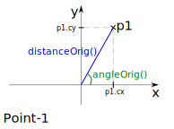
Basic point transforms
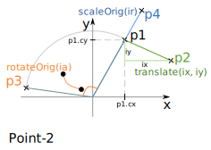
Measurements between 2 points
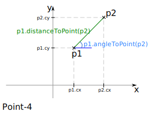
Create a point from 2 points
Line
Line and X-axis
Line and Y-axis
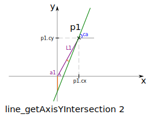 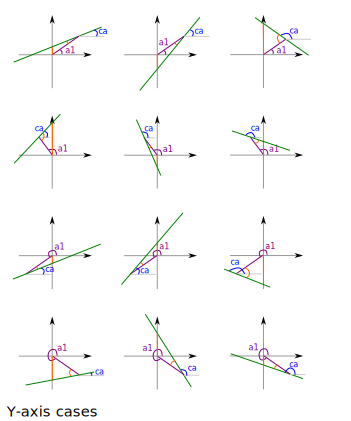
Projection of origin on line
Projection of point on line
Line intersection and bisector
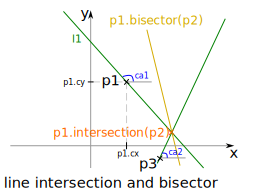
Vector
A vector is defined by its orientation and its length.
Contour
Contour description
A Contour object defines a closed path that consists of segments and arcs. A ContourCircle object defines a circle.
arc are defined differently in canvas-js and in svg-path.
Contour has 3 methods to define arcs.
Point and Stroke can be defined relative to the previous point or absolute, with cartesian or polar coordinates. Relative coordines refer to the extremity of the last segment (stroke or arc). In particular, in case of two consecutive points, the second point, if defined with relative coordinates, refers to the previous segment and not to the previous point.
addPointRP and addSegStrokeRP use relative polar coordinate. The angle of the polar coordinate is relative to the horizontal axis. It is not relative to the previous segment orientation.
2-arc defined by two points and there two tangents
Contour generation
Pointed Corner
contour().addCornerPointed() does not modify the corner.
Rounded Corner
Defintion of Rounded Corner
contour().addCornerRounded(radius) replaces the peak with an arc within the angle/peak. There is one optimal solution for the problematic.
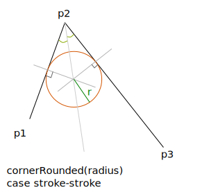
Construction of Rounded Corner
method-1
The method-1 is not recommended because the line intersection can generate point very far and then deals with very big numbers.
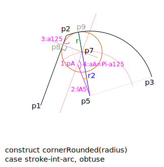  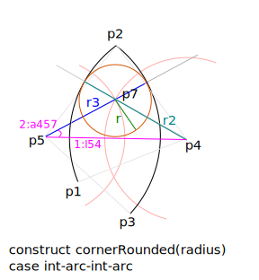
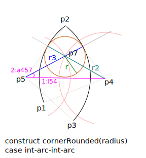
method-2
The method-2 is more stable because of the orthogonal projection.
Widened Corner
Defintion of Widened Corner
contour().addCornerWidened(radius) replaces the peak with an arc around the angle/peak. There are many possibilities to fulfil the problematic. The selected solution is to have the center of the arc on the bisector of the peak-angle. If you want to widen the corner in an other way, you have to design it yourself with strokes and arcs.
Construction of Widened Corner
Wide-Access Corner
Defintion of Wide-Access Corner
contour().addCornerWideacc(radius) is similar to the previous Widended but strokes might be added to provide an access of wide 2 x radius up to the corner. Use this corner-type, if you widen the corner to provide an access to the cutter-tool.
Construction of Wide-Access Corner
Corner summary
| Corner options | jutting corner | recess corner |
|---|---|---|
| corner pointed | no change | no change |
| corner rounded | remove material | add material |
| corner widened | add material | remove material |
| corner wideAcc | add material | remove material |
Figure
A Figure object consists in several lists:
- list of points
- list of lines
- list of vectors
- list of lists of contours called main
- list of contours called mainB or main-skeleton
- list of contours called second
- list of contours called secondB or second-skeleton
- list of contours called dynamics
Geom modules
The typescript library Geom dependes only the standard library Math and the standard canvas primitives.
Internally, Geom consists of several modules organised with the following dependencies:
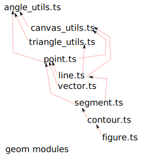